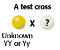
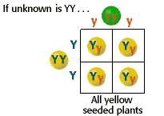
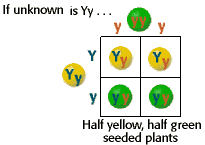

Monohybrid Cross Problem Set
Problem 7: The test cross
| To identify the genotype of yellow-seeded pea plants as either homozygous dominant (YY) or heterozygous (Yy), you could do a test cross with plants of genotype _______. |  |
Tutorial
Test cross with yy| Although the unknown genotype could also be determined by a cross with a known heterozygote, test crosses are done with homozygous recessive individuals. If the unknown is heterozygous, the recessive trait will be present in half of the offspring. | |
|  |  |


The Biology Project
Department of Biochemistry
and Molecular Biophysics
University of Arizona
Thursday, October 1, 1998
Revised: November 2004
Contact the Development
Team
http://biology.arizona.edu
All contents copyright © 1998-2004. All rights reserved.